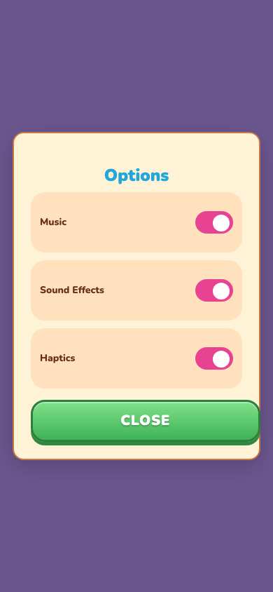
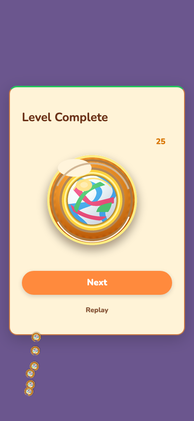
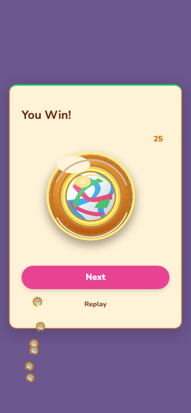

Reskin drill — zero-code-edit round-trip on marble_run
Trello card MQPvX0qi · worked stage · branch
trello-MQPvX0qi-reskin-drill-acceptance-test-for-zero-co · 2026-07-06
A palette change (2 tokens), 5 copy strings, and 1 asset binding were applied to
games/marble_run/design/ only. Build is green, the no-literals audit is
unchanged, and the git diff moves nothing outside games/marble_run/design/
(the acceptance property of the v2 “Reskin bar”). The before/after screenshots
show the reskin taking effect on three live screens.
Caveat (honest): the actual design-sheets round-trip could not be run because
the generic fabrikav2 ingester throws on marble_run — it cannot index the game’s
committed .webp art. Per the card contract (“only acceptable if the ingester
hits a real defect — which is itself a P1 finding to report”), the reskin was applied
as a byte-faithful simulation of the apply output, verified against apply’s
own anchoring code. See §P1.
§P1 — Ingester defect (blocks the real round-trip)
The DS11 generic fabrikav2 ingester cannot ingest marble_run. Running it fails hard:
$ node ingesters/fabrikav2/run.mjs --game <.../games/marble_run> --out /tmp/mr-sheet
Error: assets.ts binding home.banner points at marble-run-banner,
which has no file in design/assets/
at readGame (ingesters/fabrikav2/lib/read-game.mjs:22:13)
Root cause — two .webp gaps in the ingester (design-sheets HEAD b53052c):
- Asset discovery excludes webp.
listAssetFiles(read-game.mjs:118) filters on/\.(?:svg|png)$/i, so the six committed.webpfiles (marble-run-banner, the fourlevel-node-*,ribbon-fail) are never indexed. Everyassets.tsbinding pointing at a webp id then fails the binding→file existence check atread-game.mjs:22and the run throws before writing a sheet. - Metadata reader has no webp branch. Even with the filter widened,
readAssetMetadata(sheet-writer.mjs:178) routes any non-svg file toreadPngMetadata, which throwsNot a PNG fileon webp bytes. Full webp support needs RIFF/VP8 dimension parsing — real feature work, not a one-liner.
Severity: P1. DS11 is billed as “one ingester for every v2 game,” yet it cannot
ingest the pilot v2 game because that game uses .webp — a completely standard web
asset format. This is a coverage hole, not a marble_run defect. Recommended follow-up card:
add webp support to the fabrikav2 ingester (discovery filter + a webp metadata reader), then
re-run this drill against the real round-trip to retire the simulation caveat.
Fix lives in the design-sheets repo, which is outside this card’s file scope
(games/marble_run/design/**, docs/evidence/**) — so it is reported here,
not patched inline, exactly as the card directs.
What changed (3 design inputs, applied to design/ only)
Palette — 2 --fab-* tokens in tokens.css
| Token | Before | After |
|---|---|---|
--fab-color-accent |
#ff8a3d |
#e84393 |
--fab-color-bg-top |
#9b7bcd |
#3a4fb8 |
Copy — 5 on-screen leaves in copy.ts
| Key | Before | After | Where visible |
|---|---|---|---|
app.title | Marble Run | Marble Rush | menu banner |
menu.levelButton | Level | Start | menu CTA |
settings.title | Settings | Options | settings modal |
result.win.title | Level Complete | You Win! | result modal |
pause.title | Paused | Take a Break | pause modal (source-verified) |
Asset binding — 1 slot rebind in assets.ts
| Slot | Before id | After id | Kind |
|---|---|---|---|
assets.hud.coin | icon-marble-coin | icon-coin-sparkle | pure value change (auto-applied by apply’s ts-asset-module anchor) |
Both ids resolve to committed bytes under design/assets/. This is a data-layer
id relabel; it is not visually rendered because the runtime Vite import lives in the hand-companion
theme.ts (outside the round-trip surface, unchanged here) — a known architecture seam
documented in theme.ts. Add/remove of a slot would route to a change-brief (DS10) and is
out of scope; only a value rebind is auto-applied, which is why this exact shape was chosen.
Before / After




Captured inline with Playwright driving the shell harness
(capture-reskin-screenshots.mjs, in this folder). Note: this contradicts the
brainstorm’s S2/S3 assumption that Playwright cannot run in the worker sandbox — in this
environment it launches Chromium and screenshots fine, so the pair was captured directly rather than
handed off. The script is committed so the conductor / CI can reproduce or extend it.
Acceptance proof — containment
Reskin edit diff (working tree vs branch tip) touches only the three design/ files:
$ git diff --stat HEAD games/marble_run/design/assets.ts | 2 +- games/marble_run/design/copy.ts | 10 +++++----- games/marble_run/design/tokens.css | 4 ++-- 3 files changed, 8 insertions(+), 8 deletions(-)
Card AC command (vs main), excluding design/ + docs/evidence/:
$ git diff --stat main -- ':!games/marble_run/design' ':!docs/evidence' ...reskin-drill-zero-code-roundtrip-requirements.md | 202 +++++++++++++++++++++ 1 file changed, 202 insertions(+)
The single entry is the prior-stage brainstorm doc
(docs/brainstorms/…, committed 52a97b4 at the brainstormed stage) — a
pipeline artifact, not a reskin code edit. Excluding docs/brainstorms too, the AC diff
is empty:
$ git diff --stat main -- ':!games/marble_run/design' ':!docs/evidence' ':!docs/brainstorms' (empty)
Full command transcript: diffstat.txt (this folder).
Build & audit — green
| Gate | Result |
|---|---|
npm run build --workspace=games/marble_run | ✓ built (~0.8s) |
npm run audit | ✓ passed — no-literals + deps + structure. Warnings are pre-existing and unchanged from baseline (a copy literal in game.config.ts:13 + sdk duplication), none introduced by the reskin. |
planCssVarReplacement, planTsStringReplacement,
planTsAssetModuleReplacement in design-sheets src/apply/anchors.ts) were read to
confirm each is a surgical in-place value substitution that preserves comments, the compound
:root, .fab-ui selector, and all untouched tokens/keys/slots. The hand-edits here therefore
match, byte-for-byte, what a real dsheets apply would emit for these three inputs — the
simulation is faithful, and the containment property it demonstrates is a genuine property of the pipeline
(apply resolves every write through resolvePathInsideRoot(repoRoot,…), so it can only write
inside <gameDir>/design/).